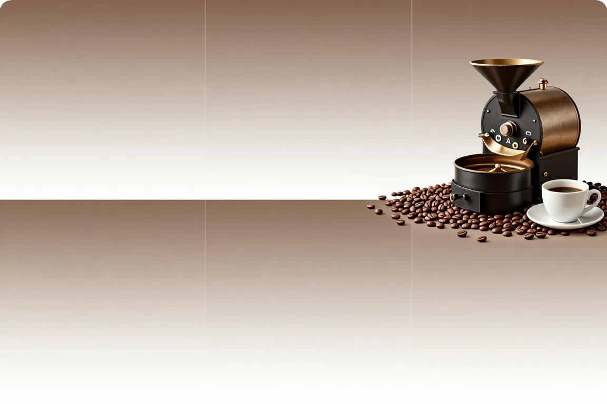

A rectangular grid of rounded cells of mixed spans, each holding one idea, with equal small gaps between them. Apple feature pages made it the default product layout from 2022.

Core thesis
A page is easiest to scan when every idea sits in its own compartment and the compartments tile one tight, regular grid.
Design principles
Divide the page into a 4-column or 12-column grid and let each cell span 1, 2 or 3 columns and 1 or 2 rows.
Keep one uniform gap of 12px to 16px between all cells, and never mix gap sizes.
Give every cell a radius of 20px to 28px and use the same radius on all cells of a page.
Put one message in each cell: a headline of at most 8 words, one visual or one number.
Make the feature cell 2 by 2 and fill the other cells at 1 by 1 or 2 by 1, so that sizes give the order of importance.
Fill cells with 2 to 4 tints of one family, plus one or two cells in the accent colour.
Align cell contents to the same inner padding of 24px, and anchor text at the top left or the bottom left.
Anti-patterns
Gaps of different sizes between cells in one grid
Empty holes in the grid that break the rectangle
Cells with different corner radii on one page
Several messages or calls to action in one cell
More than 8 cells in the first viewport
Heavy borders or hard shadows that fight the tiling